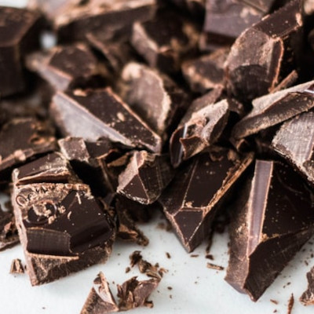
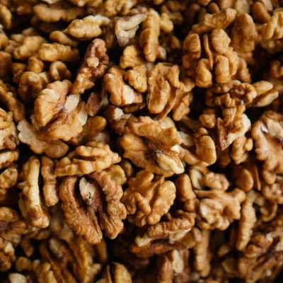
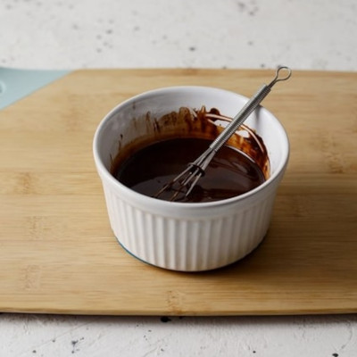

Brownie
Ingredientes
- 225g de chocolate puro
- 170g de harina
- 170g de mantequilla
- 250g de azúcar
- 100g de nueces peladas
- 60g de cacao en polvo
- 2 cucharaditas de vainilla
- 2 huevos
- sal
Preparación
- Trocear el chocolate en trozos muy pequeños
- Reservar una mitad y la otra fundirla en el microondas (3 veces, de 10 a 15 segundos)
- Fundir la mantequilla en el microondas en golpes de 10 a 15 segundos
- Incorporar el azúcar a la mantequilla y mezclar hasta que quede una masa homogénea
- Añadir el huevo y la vainilla y continuar mezclando
- Incorporar el chocolate que se había reservado y continuar mezclando
- Trocear las nueces gruesas, incorporarlas a la masa y seguir mezclando
- Preparar un molde con papel vegetal y extender la masa en el recipiente
- Calentar en el horno a 180º con calor arriba y abajo dirante 20 ó 25 minutos
- Sacar del horno y dejar enfriar durante 10 minutos
- Una vez frio, servir cubierto con el chocolate fundido


